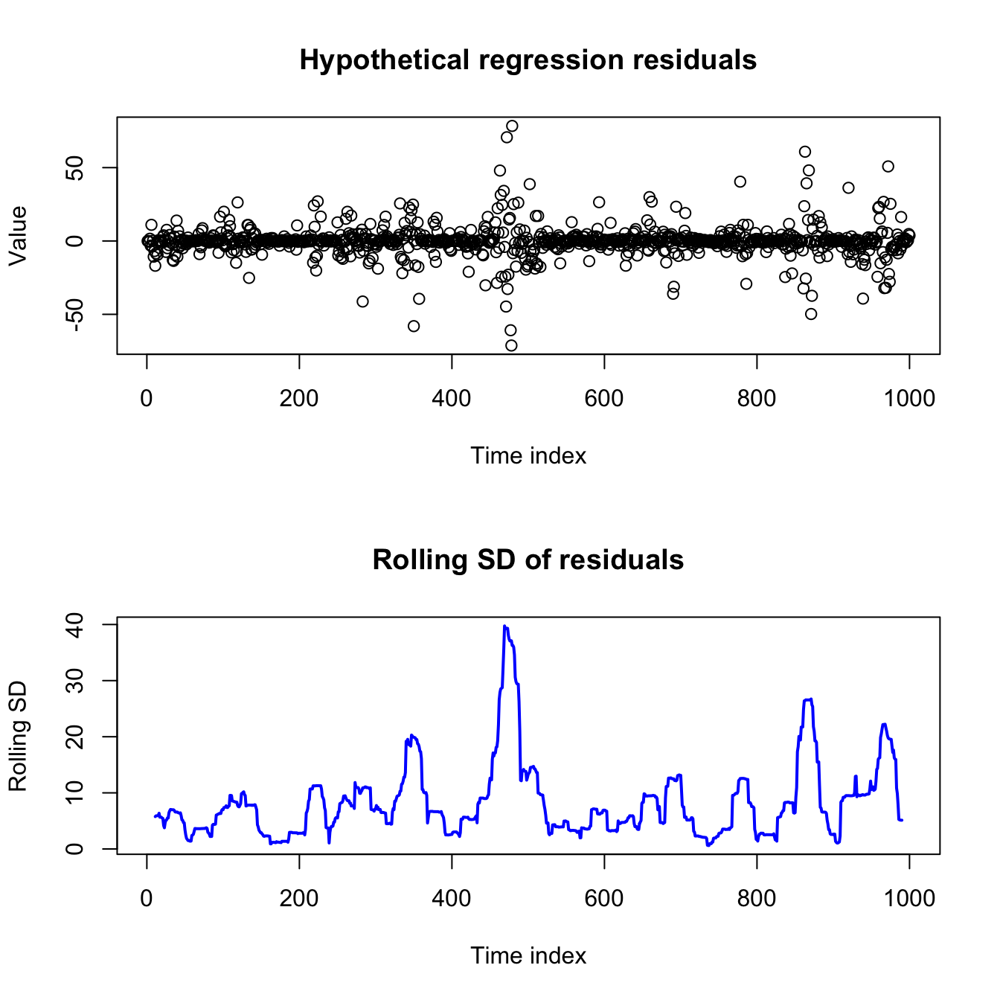
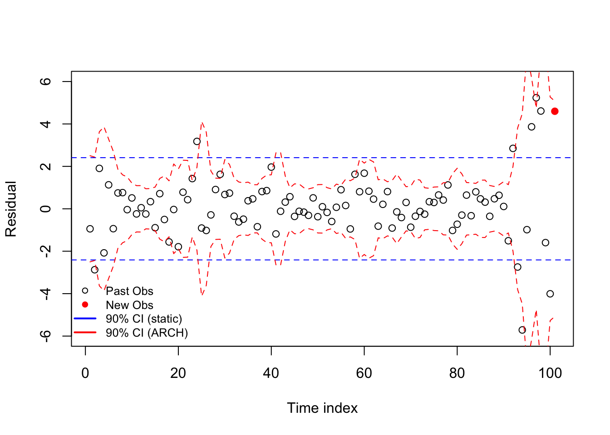
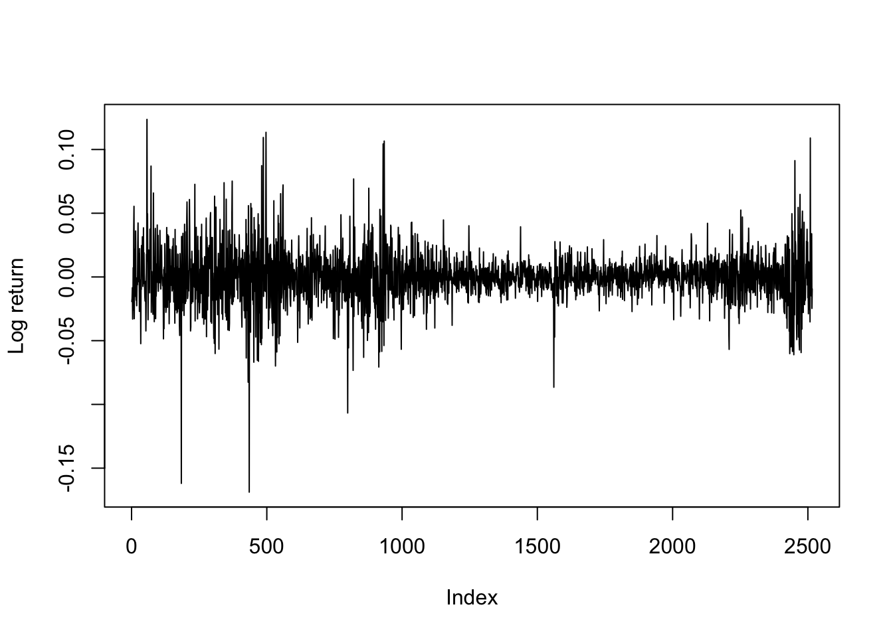
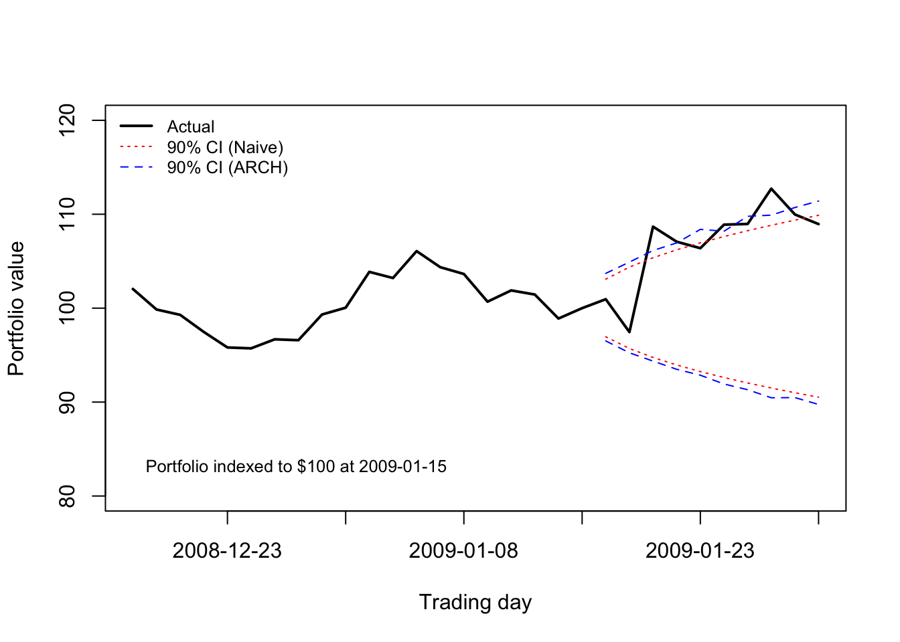

library(rugarch)
library(zoo)ARCH models
Until now, we have been using time series models to understand the data generating process and to forecast the mean or expectation of a time series. That choice might be so obvious that the choice itself disappears from view: what else might we do with a time series model?
We could forecast a full distribution of outcomes. (Statistical models such as (S)ARIMA and VARs already do this.) With this distribution we could make predictions, e.g., of the probability that a series would or would exceed a threshold value.
We could classify instead of making point estimates. This could mean collapsing series movements into “up” and “down”, or it could involve more complex tasks (like predicting which of several corporate strategies will yield the highest rate of return.)
We could forecast the maximum (or minimum) value. This branch of modeling is known as extreme value theory, and can tell us whether a bridge would collapse under a magnitude 8.0 earthquake or whether an investment bank has enough reserves to survive an economic collapse.
We could forecast the variance instead of the expectation of a series.
Forecasting the variance does not sound as useful or important as those other goals, but it can be a vital asset for understanding (and profiting from) many economic or financial series. Forecasting variance is also crucial for any regression-like problem which experiences volatility clustering — a heteroskedasticity in which observations with smaller or larger variances are grouped together temporally, as opposed to the classic case in which variance is related to the predicted level of the series.
Code
set.seed(0215)
par(mfrow=c(2,1))
sigma <- abs(arima.sim(model=list(ar=0.93),n=1000))
eps <- sigma^2*rnorm(1000)
plot(1:1000,eps,main='Hypothetical regression residuals',
ylab='Value',xlab='Time index')
plot(11:990,rollapply(eps,width=21,sd),main='Rolling SD of residuals',
ylab='Rolling SD',xlab='Time index',xlim=c(1,1000),
type='l',lwd=2,col='#0000ff')
I will show one (of several) models for volatility-clustered data, and then we will explore more when and how it could be useful.
Concept and definition of an ARCH model
Let’s assume for a moment that we have built a good regression-style model which predicts the mean of a time series.1 For now, it doesn’t matter what type of model this is: OLS regression, ARIMA models, autoregressive distributed lag (ADL)… anything which generates residuals, or estimated innovations.
An autoregressive conditional heteroskedasticity (ARCH) model replaces the familiar assumption that the error process is IID (Normal/Gaussian or otherwise), with a more nuanced belief that the residuals will be larger or smaller as defined by an AR(q) process: the expected variance of the current residual is a weighted sum of several past residuals squared.2
Note
Let \(\boldsymbol{Y}\) be a time series observed at regular time periods \(T = \{1,2,\ldots,n\}\) and following a linear model such that:
\[Y_t = \mu(\boldsymbol{X}_t) + \varepsilon_t\]
Where \(\mu(\cdot)\) is a linear mean function, \(\boldsymbol{X}_t\) is a vector of predictive features at time index \(t\) (such as past lags of \(Y\), exogenous predictors, or dummy-coded indicator functions), and \(\varepsilon_t\) is a heteroskedastic error process. Now assume that:
\[\varepsilon_t = \sigma_t \omega_t\]
Where \(\sigma_t\) is some constant which scales \(\omega_t\), a mean zero white noise process with independent and identically distributed (IID) innovations. (Without loss of generality, we may assume that \(\mathbb{V}[\omega_t]=1\).)3 Further assume that:
\[\sigma^2_t = \mathbb{E}[\varepsilon_t^2] = a_0 + \sum_{i=1}^q a_i \varepsilon_{t-i}^2\]
Where \(a_0 \gt 0\) and \(a_1, \ldots, a_q \ge 0\).
Then we say that \(\boldsymbol{Y}\) displays conditional heteroskedasticity and that \(\sigma^2_t = \mathbb{E}[\varepsilon_t^2]\) follows an autoregressive conditional heteroskedasticity (ARCH) model with order q.4
Put another way, we claim that the current error variance is a weighted average of some long-term constant and the last few variances. By setting the weights \(a_0, a_1, \ldots, a_q\) differently, we can prioritize the long-term constant (\(a_0\)), or the last few variances \(a_1, \ldots, a_q\).
If you recall our discussion of autoregressive (AR) models and ARIMA models, you’ll not be surprised to know that an ARCH process will only have a finite variance if all the roots of the characteristic polynomial defined by \(a_1, \ldots, a_q\) lie outside the unit circle. Otherwise, the compounding effect of the autoregresive terms will push the error variance to infinity.
(For an ARCH(1) process, this simplifies to requiring that \(a_1 \lt 1\).)
Code
set.seed(0211)
omega <- rnorm(123)
epsilon <- omega
var = rep(1,103)
for (i in 3:103){
var[i] <- 0.5*(epsilon^2)[i-1] + 0.4*(epsilon^2)[i-2] + 0.3
epsilon[i] <- epsilon[i]*sqrt(var)[i]}
plot(1:101,epsilon[3:103],xlab='Time index',ylab='Residual',
col=c(rep('#000000',100),'#ff0000'),pch=c(rep(1,100),19),
ylim=c(-6,6))
abline(h=c(1,-1)*qt(0.05,99)*sd(epsilon[3:102]),col='#0000ff',lty=2)
lines(1:101,qt(0.05,99)*sqrt(var[3:103]),col='#ff0000',lty=2)
lines(1:101,qt(0.95,99)*sqrt(var[3:103]),col='#ff0000',lty=2)
legend(x='bottomleft',pch=c(1,19,NA,NA),lwd=c(NA,NA,2,2),
legend=c('Past Obs','New Obs','90% CI (static)','90% CI (ARCH)'),
col=c('#000000','#ff0000','#0000ff','#ff0000'),bty='n',cex=0.8)
Even though ARCH models are backwards-looking and cannot actually see the future, they can give us a much more accurate idea of a time series error process than what we’d find by assuming a constant variance across the entire sample.
Fitting and describing an ARCH model
As with all other models we’ve discussed, ARCH models are now fit by automated software routines. However — and as Robert Engle proved in the 1982 paper which first described ARCH models — we can split the estimation of the mean process coefficients \(\hat{\boldsymbol{\beta}} = \hat{\beta}_0, \hat{\beta}_1, \ldots, \hat{\beta}_k\) from the estimation of the ARCH coefficients \(\hat{\boldsymbol{\alpha}} = \hat{\alpha}_0, \hat{\alpha}_1, \ldots, \hat{\alpha}_q\), solving one and then the other, which greatly simplifies the fitting procedures.5
Once our solutions for \(\hat{\boldsymbol{\beta}}\) and \(\hat{\boldsymbol{\alpha}}\) converges, we’ll be able to estimate several new pieces of information:
\(\hat{a}_0:\) a scaling factor for the long-term variance
\(\hat{a}_1, \ldots, \hat{a}_q:\) the ARCH parameters which pick the number of prior residuals which update our short-term variance estimate, and their relative weights.
\(\hat{\sigma}^2_1, \ldots, \hat{\sigma}^2_N:\) estimated error variances at every time step in our sample (these can be extended to help forecast into the future)
\(\hat{\boldsymbol{\beta}}:\) a vector of coefficients for the mean model. These might include some or all of the following:
An overall mean/intercept
A deterministic trend over time
Linear coefficients, or dummy-coded categorical information from external predictors, such as used in OLS regression
ARIMA coefficients (including terms from extensions like SARIMA and ARFIMA), in case the mean is also time-varying and follows an ARMA-like process.
Testing for an ARCH model
“Conditional heteroskedasticity”. “Volatility clustering”. I imagine that many readers might think to themselves, “Surely all datasets display at least a little conditional heteroskedasticity, by chance alone, or perhaps omitted variable bias. Does that mean we should apply ARCH everywhere?” But if ARCH needed to be applied everywhere, you would have learned it before now!
We can test whether any conditional heteroskedasticity in our data seem to come from the vaolitility clustering using a Lagrange multiplier (LM) test, similar to those seen in regression classes when validating regression models with a Breusch-Pagan test for heteroskedasicity.
Run the mean model with a constant variance, creating a series of residuals \(e_1, \ldots, e_N\) which in turn should be unbiased estimators of the hidden errors \(\varepsilon_1, \ldots, \varepsilon_N\).
Choose an ARCH lag order q, as suggested by the data (say, AIC scores) or a priori assumption.
Use your squared residuals as the inputs to a new autoregression, regressing them on their own past values up to lag q:
\[e_t^2 = \alpha_0 + \alpha_1 e^2_{t-1} + \ldots + \alpha_q e^2_{t-q} + \omega_t\]
- Test the regression summary information to see whether any of the selected lags of your residual sizes (their squares) are significantly predictive of the current residual sizes. In particular, the R2 information can be tested against the chi-square distribution:
\[(N \cdot R^2) \sim \chi^2_{q}\]
It’s really as simple as this: a GARCH model is useful when the size of past residuals is predictive of the size of the current residuals.6
An example of an ARCH model
Consider the returns on a large stock, such as IBM. Single stocks are influenced not just by market volatility, but also by information specific to their sector and to their company, such as news stories, earnings surprises, the success of their competitors, etc. and this information is sometimes spread out over multiple days giving rise to both brief and longer periods of high volatility.
Code
data(dji30ret)
ibm <- dji30ret$IBM[rownames(dji30ret)>'1999-01-31' & rownames(dji30ret)<'2009-02-01']
dates <- rownames(dji30ret)[rownames(dji30ret)>'1999-01-31' & rownames(dji30ret)<'2009-02-01']
plot(ibm,type='l',ylab='Log return')
KPSS and ADF tests suggest this dataset is stationary. An ARIMA-fitting procedure finds slight evidence for an MA(1) model, but the mean for these log-returns are fit reasonably well by no model at all — in line with standard economic theory.7
When we fit an ARCH model to the variance, we would see the following information (and more besides):
Code
ibm.train <- ibm[-(length(ibm) - 9:0)]
ibm.arch5 <- ugarchfit(spec=ugarchspec(variance.model=list(model='sGARCH',
garchOrder=c(5,0)),
mean.model=list(armaOrder=c(0,0))),
data=ibm.train)
print(round(ibm.arch5@fit$robust.matcoef,3)) Estimate Std. Error t value Pr(>|t|)
mu 0.000 0.000 0.481 0.631
omega 0.000 0.000 5.352 0.000
alpha1 0.252 0.063 4.016 0.000
alpha2 0.111 0.032 3.477 0.001
alpha3 0.069 0.030 2.308 0.021
alpha4 0.218 0.062 3.534 0.000
alpha5 0.342 0.132 2.596 0.009This model is actually quite simple. Define \(p_t\) to be the price of IBM stock on day \(t\). Then we may define the log return as:
\[r_t = \log \frac{p_t}{p_{t-1}} = \log p_t - \log p_{t-1}\]
We are claiming that log prices are a Gaussian random walk, meaning that log returns (differenced log prices) should be a mean zero time series.8 In fact, not just unconditionally mean zero, but conditionally mean zero. The returns are memoryless and show no ARMA-like behavior.
\[\begin{aligned} r_t &= \varepsilon_t \sim \textrm{N}(0,\sigma^2_t) \\ \\ \mathbb{E}[r_t] &= \mathbb{E}[\varepsilon_t] \approx 0 \\ \\ \mathbb{E}[r_t|r_1, \ldots, r_{t-1}] &= \mathbb{E}[\varepsilon_t|\varepsilon_1, \ldots, \varepsilon_{t-1}] \approx 0 \end{aligned}\]
However, the variance may show more complexity. We are claiming that:
\[\mathbb{V}[r_t] = \hat{\sigma}^2_t = 0.252\varepsilon_{t-1}^2 + 0.111\varepsilon_{t-2}^2 + 0.069\varepsilon_{t-3}^2 + 0.218\varepsilon_{t-4}^2 + 0.342\varepsilon_{t-5}^2\]
Although the estimated coefficients are all different from each other, taking into account their standard errors we might say that we believe that a roughly equal-weighted average of the past five (squared) returns gives a good forecast of today’s (squared) return size.
The data used to train this ARCH model end January 15th, 2009. Early 2009 was a very volatile period, as it followed the collapse of the banking sector in Fall 2008. A shareholder of IBM stock might wonder, on January 15th, 2009, how much they were likely to gain or lose over the next ten trading days.
A naive model might fit a single mean and variance to the data, using a sample period which tries to maximize sample size without losing relevance due to parameter drift. However, the ARCH model allows us to “have our cake and eat it too” — we can learn from the entire dataset, while forecasting volatility using only the most recent observations:
Code
ibm.port <- exp(cumsum(ibm[2487:2516]))/exp(sum(ibm[2487:2506]))*100
mu.naive <- mean(ibm.train[2001:2506])
sigma.naive <- sd(ibm.train[2001:2506])
p05.naive <- qnorm(0.05,cumsum(rep(mu.naive,10)),sqrt(1:10)*sigma.naive)
p95.naive <- qnorm(0.95,cumsum(rep(mu.naive,10)),sqrt(1:10)*sigma.naive)
mu <- ugarchforecast(ibm.arch5,n.ahead=10)@forecast$seriesFor[1]
sigmas <- ugarchforecast(ibm.arch5,n.ahead=10)@forecast$sigmaFor
ibm.path <- replicate(n=1000,cumsum(rnorm(10,mu,sigmas)))
p05.arch <- apply(ibm.path,1,function(z) quantile(z,0.05))
p95.arch <- apply(ibm.path,1,function(z) quantile(z,0.95))
plot(1:30,ibm.port,type='l',lwd=2,xlim=c(1,30),xaxt='n',
xlab='Trading day',ylab='Portfolio value',ylim=c(80,120))
axis(side=1,at=seq(5,30,5),labels=dates[seq(2491,2516,5)])
text(x=1,y=83,pos=4,labels='Portfolio indexed to $100 at 2009-01-15',cex=0.8)
matplot(21:30,100*exp(cbind(p05.naive,p95.naive,p05.arch,p95.arch)),add=TRUE,lty=c(3,3,2,2),col=c('#ff0000','#ff0000','#0000ff','#0000ff'),type='l')
legend(x='topleft',legend=c('Actual','90% CI (Naive)', '90% CI (ARCH)'),
lwd=c(2,1,1),col=c('#000000','#ff0000','#0000ff'),lty=c(1,3,2),
bty='n',cex=0.8)
By “regression-style” I mean a model for the mean which simplifies to a linear combination of endogenous or exogenous predictive features.↩︎
In a regression-style model, the mean of the residuals is typically 0, meaning that the square of a residual is a good estimate of its own variance.↩︎
\(\omega_t\) is often assumed to be Gaussian (that is, Normal), but this is not required to describe the ARCH model or to estimate unbiased coefficients.↩︎
When we learned ARIMA models, the autoregressive component was always indexed with ‘p’, but now here with ‘q’. The full explanation of why this indexing came about is boring and unhelpful, but please either (1) accept my apologies and deal with it, or (2) consider by analogy that ‘q’ was used in ARIMA models for the MA terms which are coefficients on lags of the hidden innovations, and that here we are doing the same thing, even if they are now “AR” type terms because of our different response variable!↩︎
For those students who wondered when to use OLS and ML in fitting regression models, this fitting process is instructive. Maximizing the likelihood of both \(\hat{\boldsymbol{\beta}\) and \(\hat{\boldsymbol{\alpha}}\) at the same time is difficult, but we can use OLS to produce an unbiased, consistent, but inefficient estimator \(\hat{\boldsymbol{\beta}}_\textrm{OLS}\), which allows us to solve for \(\hat{\boldsymbol{\alpha}}\) using ML, which in turn allows us to iteratively improve our estimators \(\hat{\boldsymbol{\beta}}\) using ML.↩︎
Here we follow convention and define “size” using the square of the residual. However, in some applications it may be more convenient to use the absolute magnitude of the residual, or even (less commonly) the exponentiation of the residuals. I would not recommend picking these alternatives unless you have a solid reason for doing so.↩︎
We are using log-returns here which are econometrically better-behaved than arithmetic returns: more symmetric and more normally distributed.↩︎
Technically, the estimated mean is slightly positive, but less than 0.001.↩︎